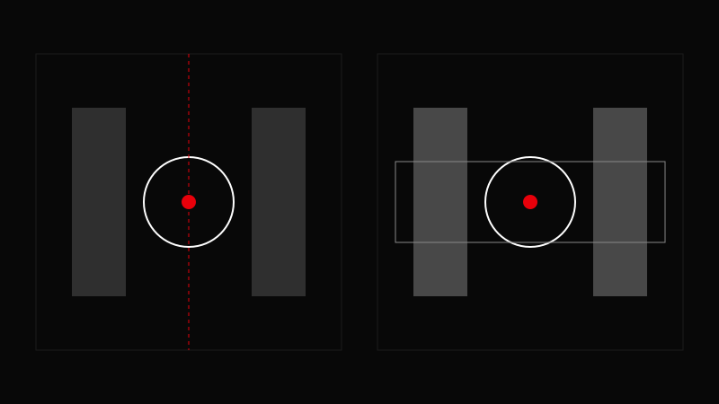

AVA CREATORS TOOLKIT · CAMERA
APERTURE & DEPTH OF FIELD
Control Focus • Control Style
Control Focus • Control Style

Lower f‑stop = shallower depth.
Choose f‑stop based on subject.
Adjust shutter to maintain exposure.
Raise ISO only if needed.
Check focus carefully.
Use f/2.8 or lower for cinematic separation.
Shooting wide open without checking focus.